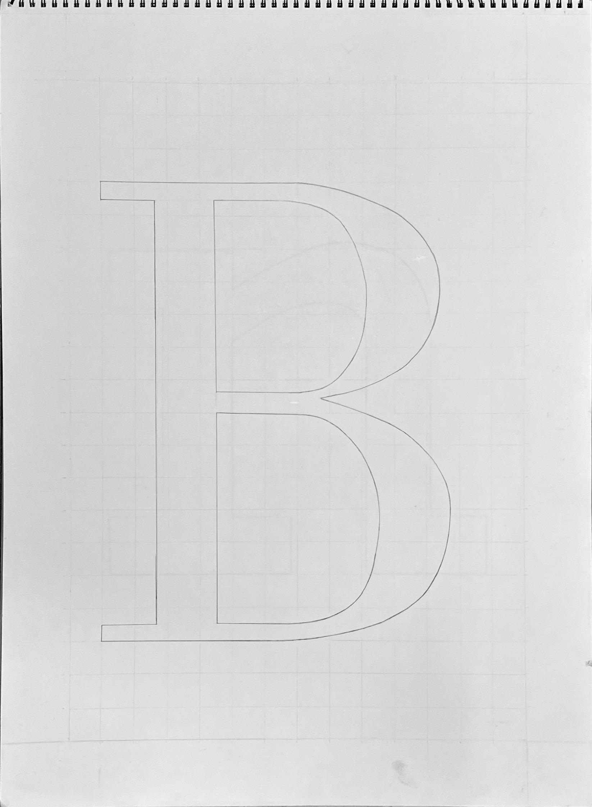

FALL 2023
Graphic Design 1 focused on the fundamentals of various soft and hard skills of design. In Project 2: Anatomy of Letterforms, students were required to not use any mechanical devices, only a T-square and triangle to produce a grid, and reproduce letterforms at 200% their original size. Done in pencil on 18" X 24" drawing paper; Bodoni uppercase B, Rockwell lowercase n, Univers lowercase a, and Univers uppercase R.
